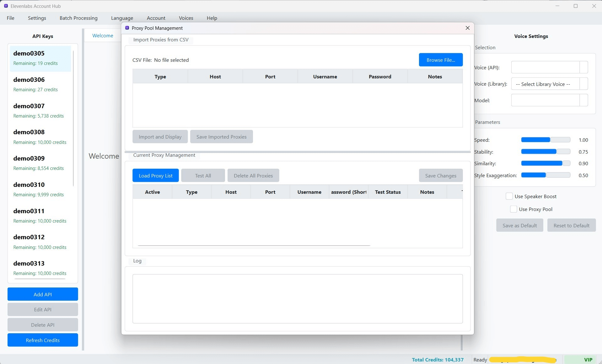
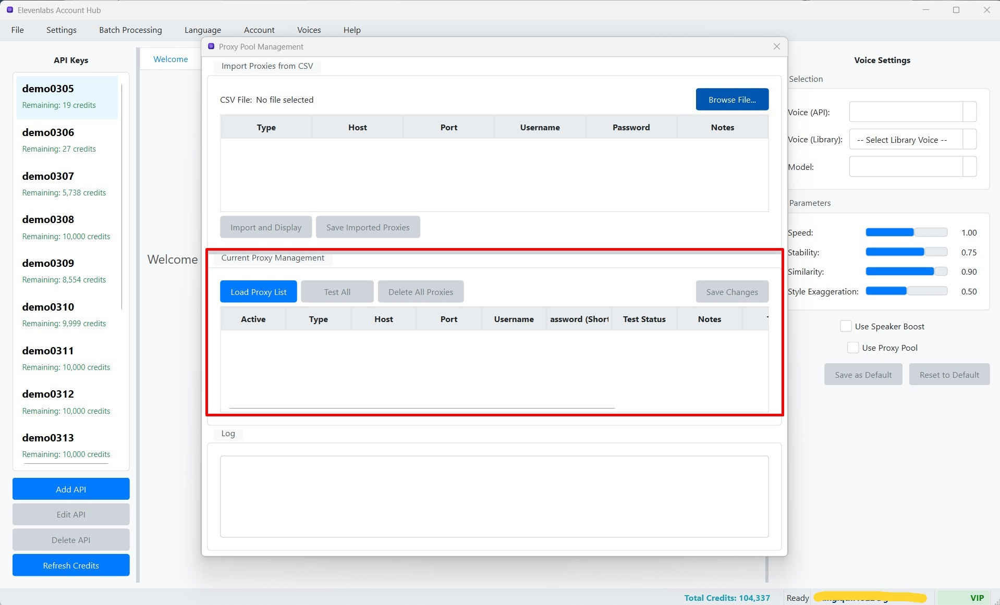

Quản lý Proxy Pool Chung
Cửa sổ "Quản lý Proxy Pool" (Proxy Pool Manager) là nơi bạn tập trung quản lý danh sách các máy chủ proxy sẽ được sử dụng bởi tính năng Proxy Pool Chung. Tại đây, bạn có thể thêm mới, chỉnh sửa thông tin, kích hoạt/vô hiệu hóa, kiểm tra trạng thái hoạt động, và xóa các proxy khỏi pool.
1. Mở Cửa sổ Quản lý Proxy Pool
Để truy cập trình quản lý Proxy Pool, bạn thực hiện các bước sau từ cửa sổ chính của ứng dụng:
- Trên Thanh Menu, chọn "Batch Processing".
- Từ menu con xổ xuống, chọn "Quản lý Proxy Pool" (Manage Proxy Pool).
Sau khi chọn, cửa sổ "Proxy Pool Manager" sẽ xuất hiện. Giao diện chính của cửa sổ này bao gồm một bảng hiển thị danh sách các proxy hiện có trong pool và các nút chức năng để thao tác với chúng.
 (Hình ảnh: Giao diện tổng quan của cửa sổ Quản lý Proxy Pool)Bảng danh sách proxy thường hiển thị các thông tin sau cho mỗi proxy:
- ID: Mã định danh duy nhất của proxy trong cơ sở dữ liệu.
- Loại (Type): Loại giao thức proxy (HTTP, HTTPS, SOCKS4, SOCKS5).
- Host: Địa chỉ IP hoặc tên miền của máy chủ proxy.
- Port: Cổng của máy chủ proxy.
- Username: Tên người dùng (nếu proxy yêu cầu xác thực).
- Kích hoạt (Active): Trạng thái kích hoạt (có được sử dụng hay không).
- Trạng thái Kiểm tra (Status Message): Kết quả của lần kiểm tra proxy gần nhất.
- Lần kiểm tra cuối (Last Tested At): Thời điểm proxy được kiểm tra lần cuối.
- Ghi chú (Notes): Ghi chú cá nhân của bạn về proxy này.
2. Thêm một Proxy mới vào Pool
- Trong cửa sổ "Proxy Pool Manager", nhấn nút "Thêm Proxy" (Add Proxy).
- Một hộp thoại "Thêm/Sửa Proxy" (Add/Edit Proxy) sẽ xuất hiện.  (Hình ảnh: Hộp thoại để thêm hoặc sửa thông tin một proxy trong pool)
- Điền đầy đủ các thông tin cho proxy mới:
- Loại Proxy (Proxy Type): Chọn loại giao thức từ danh sách thả xuống (HTTP, HTTPS, SOCKS4, SOCKS5).
- Host: Nhập địa chỉ IP hoặc tên miền của máy chủ proxy.
- Port: Nhập số cổng của máy chủ proxy.
- Username (Tùy chọn): Nếu proxy của bạn yêu cầu xác thực, hãy nhập tên người dùng.
- Password (Tùy chọn): Nếu proxy yêu cầu xác thực, hãy nhập mật khẩu tương ứng. Mật khẩu này sẽ được mã hóa khi lưu.
- Ghi chú (Notes - Tùy chọn): Bạn có thể thêm bất kỳ ghi chú nào liên quan đến proxy này (ví dụ: nhà cung cấp, vị trí, mục đích sử dụng).
- Kích hoạt (Is Active): Đánh dấu (check) vào ô này nếu bạn muốn proxy này được đưa vào sử dụng ngay lập tức khi Proxy Pool được kích hoạt. Bỏ đánh dấu nếu bạn muốn thêm vào pool nhưng chưa sử dụng ngay.
- Nhấn nút "Lưu" (Save) để thêm proxy vào pool. Proxy mới sẽ xuất hiện trong danh sách ở cửa sổ "Proxy Pool Manager".
3. Chỉnh sửa Thông tin Proxy
- Trong bảng danh sách proxy của cửa sổ "Proxy Pool Manager", chọn proxy mà bạn muốn chỉnh sửa thông tin.
- Nhấn nút "Sửa Proxy" (Edit Proxy).
- Hộp thoại "Thêm/Sửa Proxy" sẽ xuất hiện, hiển thị các thông tin hiện tại của proxy đã chọn.
- Thực hiện các thay đổi cần thiết đối với thông tin proxy.
- Nhấn nút "Lưu" (Save) để cập nhật các thay đổi.
4. Xóa Proxy khỏi Pool
- Trong bảng danh sách proxy, chọn một hoặc nhiều proxy bạn muốn xóa.
- Để chọn một proxy, nhấp chuột vào hàng đó.
- Để chọn nhiều proxy không liên tiếp, giữ phím
Ctrl(hoặcCmdtrên macOS) trong khi nhấp chuột vào từng proxy. - Để chọn một khoảng proxy liên tiếp, nhấp vào proxy đầu tiên, sau đó giữ phím
Shiftvà nhấp vào proxy cuối cùng trong khoảng.
- Nhấn nút "Xóa Proxy" (Delete Proxy).
- Một hộp thoại xác nhận sẽ xuất hiện, yêu cầu bạn xác nhận hành động xóa.
- Nhấn "Yes" (Đồng ý) để xóa các proxy đã chọn khỏi pool.
5. Kiểm tra Trạng thái Hoạt động của Proxy
Để đảm bảo các proxy trong pool của bạn vẫn hoạt động tốt, bạn nên thường xuyên kiểm tra chúng:
- Kiểm tra các Proxy đã chọn (Test Selected):
- Chọn một hoặc nhiều proxy từ danh sách trong bảng.
- Nhấn nút "Kiểm tra Đã chọn" (Test Selected).
- Phần mềm sẽ lần lượt thử kết nối qua từng proxy đã chọn đến một URL kiểm tra (ví dụ:
https://httpbin.org/ip). - Kết quả kiểm tra (ví dụ: "Thành công", "Timeout", "Lỗi kết nối") sẽ được cập nhật vào cột "Trạng thái Kiểm tra" (Status Message) và thời gian kiểm tra sẽ được ghi vào cột "Lần kiểm tra cuối" (Last Tested At) cho từng proxy.
- Kiểm tra Tất cả Proxy trong Pool (Test All):
- Nhấn nút "Kiểm tra Tất cả" (Test All).
- Phần mềm sẽ thực hiện kiểm tra kết nối cho tất cả các proxy hiện có trong pool.
- Quá trình này có thể mất một chút thời gian nếu bạn có nhiều proxy. Kết quả và thời gian kiểm tra sẽ được cập nhật tương tự như khi kiểm tra các proxy đã chọn.
Các kết quả kiểm tra có thể bao gồm:
- Thành công (Success): Proxy hoạt động tốt và có thể kết nối ra ngoài.
- Timeout: Kết nối đến proxy hoặc từ proxy đến URL kiểm tra bị quá thời gian chờ.
- Lỗi Proxy (Proxy Error): Có lỗi xảy ra trong quá trình kết nối qua proxy (ví dụ: proxy từ chối kết nối, lỗi xác thực với proxy).
- Lỗi HTTP (HTTP Error): Proxy kết nối được, nhưng máy chủ đích (URL kiểm tra) trả về một mã lỗi HTTP (ví dụ: 403 Forbidden, 500 Internal Server Error).
- Lỗi Yêu cầu (Request Error): Các lỗi mạng khác xảy ra trong quá trình gửi yêu cầu (ví dụ: lỗi DNS).
- Lỗi không mong muốn (Unexpected Error): Các lỗi khác không xác định.
6. Nhập và Xuất Danh sách Proxy từ/sang Tệp CSV
Để dễ dàng quản lý một số lượng lớn proxy, bạn có thể nhập danh sách proxy từ tệp CSV hoặc xuất danh sách proxy hiện tại trong pool ra tệp CSV.
- Nhập từ CSV (Import from CSV):
- Nhấn nút "Nhập từ CSV".
- Một hộp thoại chọn tệp sẽ xuất hiện. Duyệt đến và chọn một tệp
.csvchứa danh sách proxy của bạn. - Tệp CSV nên có các cột tương ứng với thông tin proxy (ví dụ:
proxy_type,host,port,username,password,notes,is_active). Dòng đầu tiên của tệp CSV nên là dòng tiêu đề chứa tên các cột này. - Phần mềm sẽ đọc tệp và cố gắng thêm các proxy từ tệp vào pool. Có thể có các tùy chọn xử lý trùng lặp (ví dụ: bỏ qua hoặc ghi đè proxy đã tồn tại).
- Xuất ra CSV (Export to CSV):
- Nhấn nút "Xuất ra CSV".
- Một hộp thoại lưu tệp sẽ xuất hiện. Chọn vị trí và đặt tên cho tệp
.csvbạn muốn lưu. - Toàn bộ danh sách proxy hiện tại trong pool (bao gồm tất cả thông tin của chúng) sẽ được lưu vào tệp CSV này.
Bạn có thể tham khảo tệp sample_proxies.csv (nếu được cung cấp cùng phần mềm, thường nằm trong thư mục gốc của dự án) để xem định dạng tệp CSV mẫu cho việc nhập/xuất proxy.
7. Xóa Tất cả Proxy khỏi Pool
Nếu bạn muốn xóa toàn bộ danh sách proxy khỏi Proxy Pool Chung:
- Nhấn nút "Xóa Tất cả" (Delete All Proxies).
- Một hộp thoại xác nhận sẽ xuất hiện, cảnh báo rằng hành động này sẽ xóa tất cả các proxy trong pool và không thể hoàn tác.
- Nhấn "Yes" (Đồng ý) để xác nhận. Toàn bộ proxy sẽ bị xóa khỏi cơ sở dữ liệu của ứng dụng.